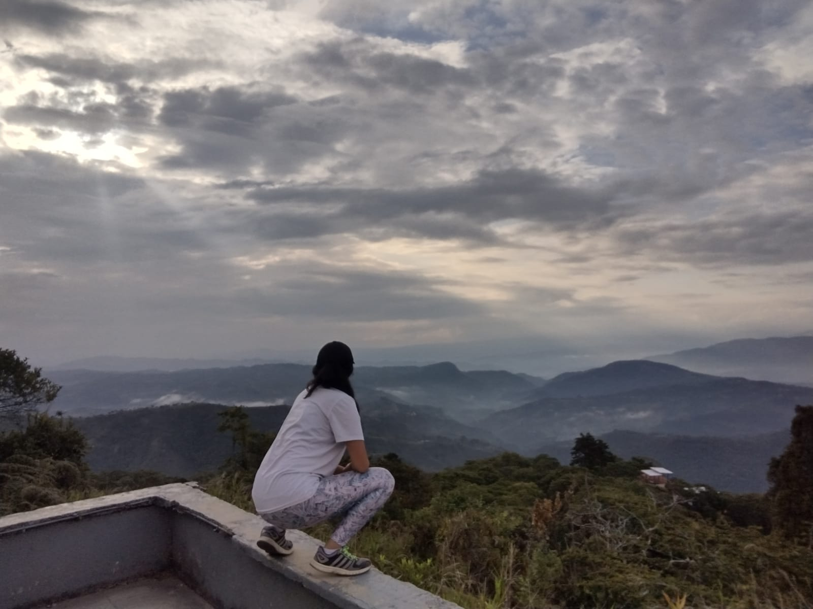

<!DOCTYPE html>
<html lang="en">
  <head>
    <meta charset="utf-8" />
    <meta name="viewport" content="width=device-width, initial-scale=1" />
    <link
      href="https://cdn.jsdelivr.net/npm/bootstrap@5.3.2/dist/css/bootstrap.min.css"
      rel="stylesheet"
      integrity="sha384-T3c6CoIi6uLrA9TneNEoa7RxnatzjcDSCmG1MXxSR1GAsXEV/Dwwykc2MPK8M2HN"
      crossorigin="anonymous" 
    />
    <title>Mi pagina web</title> 
    <style>
        body {
            background-color: #f8d7da; 
        } 
        .texto{ 
            position: absolute; 
            top: 30%; 
            left: 50%; 
            transform: translate(-50%, -50%); 
            text-align: center;
        }
        .texto2 {
            position: absolute; 
            top: 30%; 
            left: 90%; 
            transform: translate(-50%, -50%); 
            text-align: center; 
        } 
        .texto3 {
            position: absolute; /* Establece la posición absoluta */
            top: 70%; /* Posiciona el texto en el 50% de la altura del contenedor */
            left: 55%; /* Posiciona el texto en el 50% del ancho del contenedor */
            transform: translate(-50%, -50%); /* Centra el texto horizontal y verticalmente */
            text-align: center; /* Centra horizontalmente el texto */
        }
        .texto4 {
            position: absolute; 
            top: 100%; 
            left: 80%; 
            transform: translate(-50%, -50%); 
            text-align: center; 
        }
    </style>
  </head>
</html> 
  <body>
    <div class="container" >
        <div class="row"></div>
        <div class="col-md-6">
        <h1 class = "fst-italic" > Myself!  </h1>
         
        <div class="col-md-9">
            
        </div> 
    </div> 
    <div class="texto">
            <h1 class = "fst-italic"> Kalia Gonzalez</h1>
            <p class = "font-italic" >En este sitio web , les voy a presentar algunos aspectos sobre mi como lo son, la musica, mi deporte favorito y  que estudio actualmente </p> 
            <h2 class = "fst-italic">Carrera profesional en formacion</h2> 
            <p class = "font-italic" >Actualmente estudio ingenieria de sistemas y computacion en la universidad de los Andes. Me ha parecido una carrera interesante, al principio 
                tenia miedo por no tener tanto conocimiento de programacion. Pero ahora, me facina la carrera y siento que he mejorado exponencialmente. Ha sido pesado pero no me arrepiento de haberla 
            escogido .</p>
        </div> 
        <div class="texto2"> 
            <h2 class="fst-italic">Lista Musical</h2> 
            <ul class="fst-italic">
                <li>Can't Get Enough </li>
                <li>Moth to a Flame </li>
                <li>Cohete </li>
                <li>The boy is mine </li>
                <li>Amargura </li>
                <li>Luna </li>
                <li>Deja ver </li>
              </ul>
        </div> 
        <div class ="texto3"> 
            <h2 class="fst-italic">Formulario de Registro!</h2> 
            <form>
                <div>
                  <label for="nombre" class="fst-italic">Nombre<br /></label>
                  <input type="text" id="nombre" />
                </div>
                <div>
                  <label for="correo" class="fst-italic">Correo<br /> </label>
                  <input type="email" id="correo" />
                </div>
                <div>
                  <input type="reset" value="Cancelar" />
                  <input type="submit" value="Enviar" />
                </div>
              </form>
        </div>  
        <div class="texto4"> 
            <h2 class="fst-italic">Deporte favorito!</h2> 
            <p class="font-italic"> El deporte es un pilar muy importante en mi vida, considero que ayuda mucho para la salud y el animo
                de una persona. Actualmente, juego tenis de campo desde los 8 años de edad. Mi abuelito me ayudo en este proceso, pues el 
                jugaba tenis tambien.Hoy en dia, agardezco mucho que este deporte este en mi vida y me llene de alegria.
            </p>
        </div>
    </div>
    </div> 
  </body>
</html>